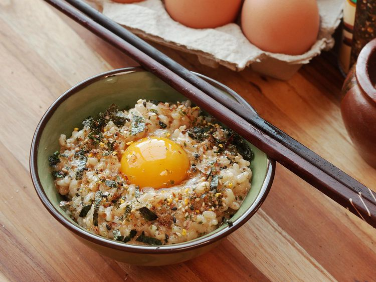
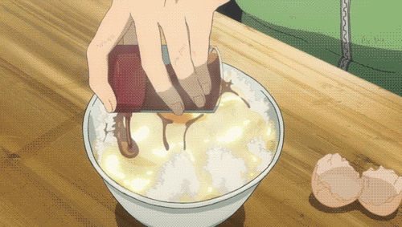

Literally translated 'Egg on rice', Tamago Kake Gohan is a popular dish in the Japanese cuisine. It most often appears as a choice for breakfast.
Tamago Kake Gohan
Home
Credit: Serious Eats / J. Kenji López-Alt

Credit: Silver Spoon Anime

Description

Ingredients
- (Single Serving)
- 1 cup hot cooked white rice (about 12 ounces cooked rice; 340 g)
- 1 large egg (plus 1 optional egg yolk)
- 1/2 teaspoon soy sauce, plus more to taste
- 1/2 teaspoon mirin (optional)
- Pinch kosher salt, plus more to taste
- Pinch MSG powder, such as Aji-no-moto or Accent (optional)
- Pinch Hondashi (optional)
- Furikake to taste (optional)
- Thinly sliced or torn nori to taste (optional)

Steps
- Place rice in a bowl and make a shallow indentation in the center. Break the whole egg into the center. Season with 1/2 teaspoon soy sauce, 1/2 teaspoon mirin (if using), a pinch of salt, a pinch of MSG (if using), and a pinch of Hondashi (if using)
- Stir vigorously with chopsticks to incorporate egg; it should become pale yellow, frothy, and fluffy in texture. Taste and adjust seasonings as necessary
- Sprinkle with furikake and nori (if using), make a small indentation in the top, and add the other egg yolk (if using). Serve immediately
Credit for the Ingredients and Steps goes to Serious Eats - Tamago Kake Gohan (Japanese-Style Egg Rice)